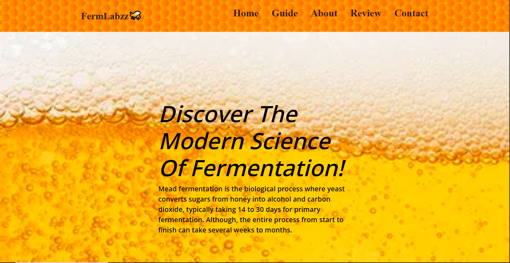

My name is Kah Seng, Welcome to my portfolio.
I'm an aspiring web developer who is eager to collaborate and grow in a dynamic team environment. the main coding language I use are (CSS, HTML and Bootstrap).

I'm an aspiring web developer who is eager to collaborate and grow in a dynamic team environment. the main coding language I use are (CSS, HTML and Bootstrap).

This website is based on scientific research on fermentation and home brewery, and its a simple guide on how you could make your own mead without fancy gears.
Programming Language used: Bootstrap, CSS and HTML.
Three things I learned from making the website:
The site's layout is built with CSS Grid. The hardest part was keeping every box aligned, and you could simply just plan the layout ahead of time with grid-template-areas before writing any styles.
grid-template-areas:
"steps steps photo"
"intro intro photo";
I tested the site at phone, tablet, and desktop widths using the inspect element function. Media queries let the grid collapse into one column so nothing gets squashed on small screens.
Tested at 375px, 768 px, 1280px.
I chose a honey and amber palette to match the subject, and I reused the same rounded corner for a more dynamic look, spacing and fonts on every page so the site feels like one product instead of five seperate pages.
I am a first sem student studying software engineering at forward college. I built my first webpage for a class assignment and spent two extra hours making the colors match. That was the moment I knew this was the field for me.
What I enjoy most is turning a blank page into something people can actually use. Building FermLabzz taught me how much planning a good layout takes, and I have been practicing CSS Grid ever since.
When I am not coding, I usually go bouldering, gaming and hanging out with friends. It keeps my mind occupied on strategy, which helped to improve my skill in debugging.